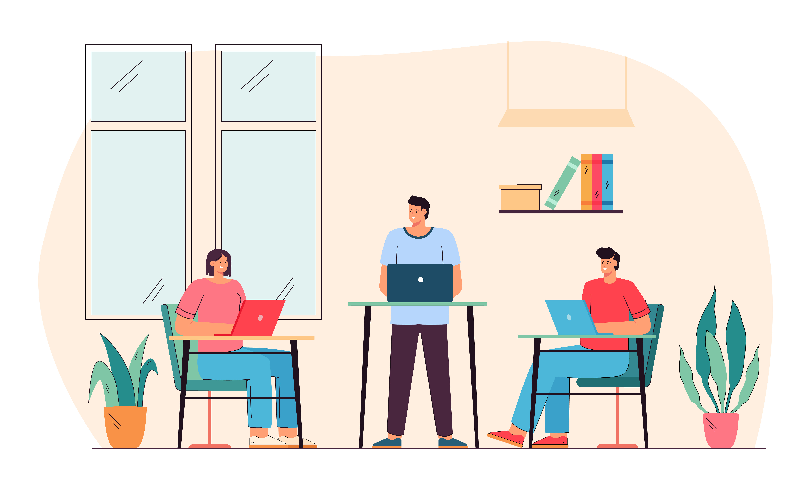

How you sit at your desk at work and at home can make a big difference in your long-term health. Many years ago, people did not understand the importance of ergonomics and good posture. But as more studies have been done and more data is released, it is becoming obvious that the working conditions we experience in our younger years can have a significant effect on our health as we get older. Back problems, aching joints, and other serious issues can all be the result of the chairs we sit in for the years that we work. Ergonomic seating has been created to help solve the long-term health issues associated with office work, and it is a subject that everyone needs to understand.
 Standing Position Calculator
Standing Position Calculator
A comfortable work space can help you feel your best. Give your sitting work area a makeover with this visual guide to office ergonomics. Incorrectly adjusted office chairs and tables lead, in the best case, to back and neck pain and, in the worst case, to permanent back or disc damage.
The chair should have at least 5 castors at the base to ensure stability. Chairs with five castors are more stable than four castor chairs. Four castor chairs are easier to tip over.
The seat should be able to adjust until your thighs are parallel to the ground. Shorter/taller users may need different height cylinders. Adjusting the chair too high places more pressure than necessary on the backs of the legs, reducing circulation. If the chair is too low, a smaller portion of the legs is in contact with the chair and the pressure on that area is correspondingly greater.
The backrest height should be adjustable so the lumbar support can be fitted into the low back. The backrest should mirror the shape of your back to provide support. The weight of the upper body is supported by the spinal vertebrae at the bottom of the lumbar curve (curve at the small of your back). These same vertebrae are the most common origins of back pain. Using the backrest to support the lumbar curve relieves some of the pressure on the frequently injured vertebrae.
Armrests are optional. Even with the range of adjustments found in many oftoday’s armrests, there are some places where armrests will interfere with work.
Many people in offices make the mistake of sitting almost all day long. This often results in excessive and one-sided strain on the back, irritating pain and a disturbance of concentration. A height-adjustable desk brings dynamism to the office. Simply move it to the desired height at the touch of a button, lock it securely and change the working posture almost automatically. Standing instead of sitting has a positive effect on your concentration and your health!